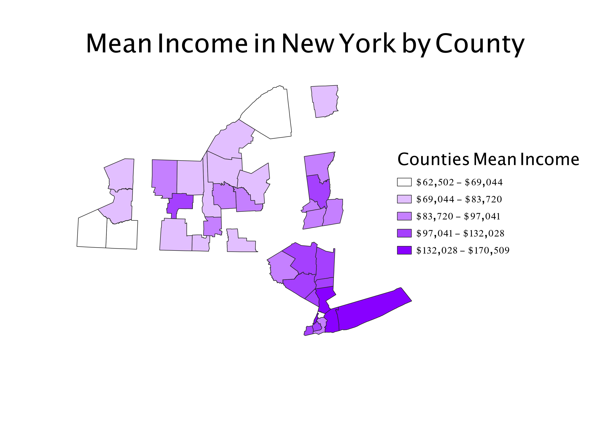

Homework 6: Census data choropleth
Emily Ormond
This is a map of New York State divied up by County. Respesented is the mean income in the last 12 months from 2021. The counties that are missing did not have data on the census website

Data used for this project
CSV dataset
Link to shapefile